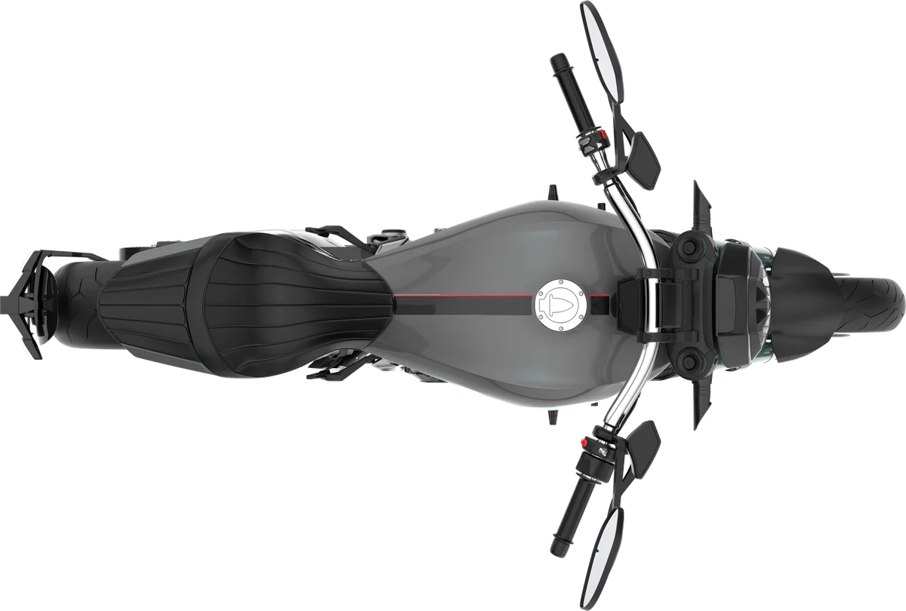

Hold it, or W. Lean with the mouse or A/D.Hold the button to ride. Drag across the cockpit to lean.
//Motorcycle dashboard app · Android
The fighter-jet cockpit for your motorcycle.
F-43 Moto OS turns the Android phone on your handlebar into an instrument panel. Speed, lean and heading come from the phone itself. Plug in an OBD-II adapter and it reads your engine's own computer: revs, coolant, voltage, fuel trims and fault codes.
Put your Android phone on the handlebar, in landscape. Speed, lean angle and heading work straight away, from the phone's own sensors.
02
Plug in an adapter
An OBD-II Bluetooth adapter goes in your bike's diagnostic port, often under the seat or a side panel. Pair it once, and the cockpit reads the engine.
03
Pick your bike, ride
Choose from 90 India-spec presets or add your own. Switch on, the self-test runs, the lamps light and go out, and you're cleared to ride.
Set it up before you ride. Hands on the bars, eyes on the road.

1Phone on the handlebar2OBD-II adapter, in the diagnostic port3Bluetooth link · ECU data
Engine
ABS
Battery
Coolant
Fuel
OBD
Cleared to ride
//02 · Real screens
The real app. In motion.
Captured from a phone running F-43 Moto OS in demo mode. The bike is simulated; every pixel of the cockpit is the app.
ClusterFree
Compressor RPM and a split flight display. Above walking pace, the cockpit declutters to this.
10RIDE faces · 5 free
11Rev gauges · 6 free
90Bike presets
0Accounts, clouds or ads
//03 · Systems
Everything a rider needs. Free.
Safety features, fault codes and the full live dashboard are free for every rider. Nothing here needs an account.
Demo
Safety
Crash detection
Senses a hard impact and counts down. If you don't tap I'M OK, it opens a ready-to-send SOS text with your location for your emergency contacts.
Best-effort: it depends on sensors, signal and your settings. Never rely on it as your only safety net.
ECU · Fault scan
P0562
System voltage low
Check the charging system: battery, regulator, connections.
Diagnostics
Fault codes, in plain language
Read and clear stored faults, with freeze frame, readiness monitors and Bus Scan. Clearing refuses to run while the bike is moving.
°
Levelled
Sensors Next update
Lean, levelled
Bank, pitch and heading from the phone. Phone mounted crooked? Level it once and lean reads true.
°C
Phone hotShade it from the sun
Phone Next update
Heat warnings
Sun, screen, charging and GPS add up. F-43 tells you when the phone on your mount runs warm, so you can shade it before Android steps in.
Warnings
Master caution, with a diagnosis
Priority warnings tell you the probable cause, what to check, and whether it's safe to ride on. Guided multimeter tests show where the probes go.
After the ride
Mission Complete
Park up and your route draws itself while the stats count up: distance, ride time, top speed, max lean.
mTurn right · NH 44
Navigation
Turn by turn
On OpenStreetMap, with the turn banner across the top. Maps and routing need a data connection.
Odometer
Fuel
Service
Chain
Logs
Your bike's logbook
Fuel, service and chain reminders tied to your odometer, a trip computer and personal bests.
Display Next update
Fits your phone
The cockpit lays itself out for your screen, big or small. Want it a step larger? One setting.
Mayday
SOS
One-tap Mayday
Text your people your live location, or call them, from one button.
//04 · F-43 Pro
Open the engine up.
One-time unlock, no subscription. A 7-day trial of everything starts the first time your bike connects, so it never runs out while your adapter is in the post.
Mechanical LabYour engine in 3D: piston, valves and heat move with the data. Sample data shown.
ECU Report and fault map
The engine computer's own self-tests: misfire counters, O2 sensor response, fuelling and charging. Faults pinned where they live on the engine.
Learn your bike
Finds what your bike broadcasts on its CAN bus, one signal at a time, and shows you before it saves. The CAN sniffer shows every ID and byte.
Pre-flight checklist
10 / 19 systems armed
CockpitSpeed, gear, engine tiles, six rev gauge styles
Horizon and compassBank, pitch and heading, no adapter needed
RIDE modeDeclutters above walking pace. Five faces
Fault codesRead and clear, freeze frame, readiness, Bus Scan
Crash detectionCountdown, then a ready-to-send SOS text
Mayday and warningsPriority warnings and guided multimeter tests
Logs and navigationFuel, service, chain, trip computer, OpenStreetMap
Mission CompleteYour route draws itself after every ride
Pilot ranksCadet to Air Marshal, for everyone · next update
Phone heat warningsWarm and hot alerts on the mount · next update
ECU ReportMisfires, O2 response, fuelling and charging
Live AnalysisLong-window wear checks and a guided idle test
Mechanical LabThe 3D engine, with a fault map
Learn your bikeFinds your bike's own CAN signals
CAN snifferEvery ID and byte, with mark, filter and save
More instrumentsFive RIDE faces, five rev gauges, six HYPER colourways
Flight DebriefA share card for every ride, Dyno and Flight Recorder
Voice guidanceSpoken navigation and the nav radar scope
GarageMore than one bike, each with its own logs
Engine data, fault codes and the ECU Report need an OBD-II adapter. What Learn your bike can find depends on what your bike broadcasts. Navigation and weather need a data connection.
//05 · Pilot ranks Next update
Earn your wings.
Every ride with F-43 counts toward your rank, Cadet to Air Marshal. Distance and rides both count. Speed and lean never do: a rank that rewarded them would be a reason to ride harder.
Promoted
Cadet
0 km0 rides
Next: Pilot Officer at 50 km and 3 rides
CadetYour first ride
Pilot Officer50 km · 3 rides
Flying Officer300 km · 15 rides
Flight Lieutenant1,000 km · 40 rides
Squadron Leader2,500 km · 90 rides
Wing Commander5,000 km · 160 rides
Group Captain10,000 km · 300 rides
Air Commodore20,000 km · 500 rides
Air Marshal35,000 km · 800 rides
Free for every rider. Demo-mode rides never count.
Privacy: no account, no cloud, no ads, no analytics.
No accountNo cloudNo adsNo analyticsNo accountNo cloudNo adsNo analytics
Your ridesYour phoneYour dataYour phoneYour ridesYour phoneYour dataYour phone
Your rides, logs and bike data stay on your phone. Searching for a place, planning a route or checking the weather asks OpenStreetMap or Open-Meteo, and carries only the place you asked about. Read the privacy policy.
//06 · Questions
Is it safe for my bike?
The worries riders raise before they plug an adapter into their bike, answered against what the app does today.
Yes. The download is free, and the safety features, fault codes and the full live dashboard stay free. F-43 Pro is a one-time unlock with no subscription, and a 7-day trial of everything starts the first time your bike connects.
Does it work without an OBD-II adapter?
Partly. Speed, lean, heading, crash detection, navigation and the logs work from the phone alone. Engine data, fault codes and the ECU Report need an OBD-II Bluetooth adapter in your bike's diagnostic port.
Can I try it before I buy an adapter?
Yes. Demo mode runs a simulated bike, so you can try every screen first. Demo rides never count toward your rank or your logs.
Will using F-43 for hours on a long ride harm my ECU?
No. F-43 only reads. It asks the ECU for one reading at a time (revs, speed, coolant temperature), waits for the answer, then asks for the next, about ten times a second. That's the same diagnostic link a service-centre scan tool uses, and BS6 bikes are required to support it. If your ECU doesn't report a reading, F-43 stops asking for it.
Reading doesn't write anything to the ECU's memory, so a ten-hour ride wears it no more than a ten-minute one.
Does F-43 change anything on my ECU?
Only one thing, and only when you ask: clearing stored fault codes. You have to scan first, F-43 asks you to confirm, and it refuses while the bike is moving. Everything else only reads or listens: live data, fault scans, ECU details, the module scan, the CAN monitor and Learn your bike.
Can F-43 tune or remap my bike, or add power?
No. F-43 can't flash, remap, code or adjust the ECU, and it can't operate any part of the bike. It shows what your bike is doing; it doesn't change how it runs. Power and torque figures in the app are estimates worked out from your riding data.
Can it turn on the check-engine light or create a fault code?
Reading data doesn't set fault codes. If a warning light comes on only while the adapter is plugged in, suspect the hardware: a loose plug, a cable wired for a different bike, or a faulty adapter. Unplug it and stop using that cable or adapter until it's checked.
What happens if the Bluetooth link drops mid-ride?
Nothing happens to the bike. The adapter plays no part in how the engine runs. F-43 calls out "Link lost", tries to reconnect, and marks the readings that have stopped updating.
Is it safe to clear fault codes?
Only after the fault is fixed. Clearing erases the stored codes, turns off the check-engine light and resets the emission readiness monitors. It doesn't repair anything, and the light comes back if the fault is still there. Never clear codes just before a service visit: the code is what your mechanic needs.
Will the adapter drain my bike's battery?
Not while you ride. Parked is different: on some bikes the diagnostic port stays powered with the key off, and a dongle left in it keeps drawing current. Over days that can flatten a small motorcycle battery. Unplug the adapter if the bike will sit for more than a couple of days.
Can I leave the adapter plugged in for daily riding?
Yes. Check once whether your port is live with the key off: if the adapter's light stays on with the key out, it's drawing from the battery. Push it fully home and secure it so it can't wobble; a loose plug is the usual cause of dropouts.
Can the wrong cable damage my bike?
It can. Motorcycle diagnostic ports aren't standard, so the adapter cable has to match your make, model and year. A cable meant for another bike can put power on the wrong pin. Buy the cable and adapter together from one seller, quoting your exact model and year, and never force a plug that doesn't fit.
Can I ride in the rain with the adapter plugged in?
Most adapters aren't waterproof, and while one is plugged in the port's rubber cap is off. Keep the adapter tucked under the seat, out of spray. Before a wash, or if the bike will stand in the rain, unplug it and refit the cap.
Will using F-43 void my warranty?
F-43 plugs into the bike's own diagnostic socket, the one the service centre uses, with no cutting, splicing or extra wiring. Apart from clearing codes when you ask, it changes nothing on the ECU. We can't speak for every maker's warranty terms, so check your booklet if you're unsure, and unplug the adapter before a service visit.
Will F-43 drain my phone's battery?
F-43 keeps the screen on while it's open, because it's a mounted dashboard. Plan for it the way you would for navigation with the screen on, and on long rides power the phone from a USB charger on the bike. RIDE mode shows the phone's battery level.
My phone gets hot on the mount. Is that a problem?
Direct sun, a bright screen, charging and GPS together make any phone hot, and Android protects itself by dimming, slowing charging or closing apps. Mount the phone where air reaches the back, use a sun visor, and let it cool if Android warns about temperature. The next update adds F-43's own phone heat warnings.
Does it keep working if I switch apps or the screen turns off?
Yes, while it's connected to a real adapter. A "bike link" notification keeps readings, the trip computer and ride recording running in the background. Exempt F-43 from Android battery optimisation, or some phones stop it anyway.
Does it need internet or use my mobile data?
The dashboard, warnings, fault scans and ride log work with no internet. Crash SOS opens a text message, so it needs mobile signal, not data. Searching for a place, planning a route, weather, and map areas you haven't viewed before use mobile data.
Is it safe to use while riding?
F-43 is built to be read at a glance, never operated on the move. Pair the adapter, pick your bike and set up routes while parked. With RIDE auto-engage on, the screen clears down to speed, lean, vitals and the ride clock above 8 km/h. Fault scans and clearing refuse to run while the bike is moving.
Does F-43 send my bike's data anywhere?
No. There's no account, no cloud and no analytics. Readings, fault codes, ride logs and your bike's VIN stay on your phone unless you choose to share them. Place search, routing and weather ask OpenStreetMap or Open-Meteo, and that request carries only the place or approximate location you asked about.